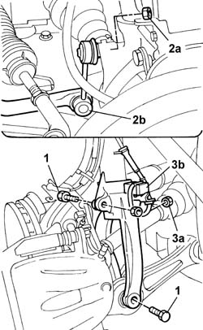
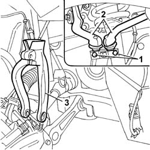

4410A80 Lower fork connecting front suspension SHOCK ABSORBER to LOWER TRACK CONTROL ARM (one), left or right - R.R.
- Path
- Procedures > 44 SUSPENSION AND WHEELS > 4410 FRONT SUSPENSION > 4410A FRONT SHOCK ABSORBERS AND SPRINGS > 4410A80 Lower fork connecting front suspension SHOCK ABSORBER to LOWER TRACK CONTROL ARM (one), left or right - R.R.
- Kind
- repair procedure (removal / refitting; the operation number is the code)
- Applies to
- all engines; all production periods
- Interactive page
- https://sloeber94.github.io/elrnDB-lThss/en/#/177587
Applies to: all engines; all production periods
 Removing
Removing
 Refitting
Refitting- Position the vehicle on a lift.
See in Op. 4450B04 Right FRONT WHEEL (one) - R.R.
1. Undo the fixing bolts.
2. Undo the fixing nut (2a) and disconnect the end of the anti-roll bar (2b).
3. Undo the fixing nut (3a) and move the accelerator sensor (3b) aside.

Applies to: all engines; all production periods
1. Undo the fixing bolts.
2. Separate the two heads from the suspension housing.
3. Remove the suspension fork.

Applies to: all engines; all production periods
Refitting
Removing- Fit the suspension fork on the shock absorber.
- Place the steering knuckle in its original position checking that the driveshafts are engaged in the housing on the differential and on the intermediate driveshaft.
- Secure the two ends in the special housings in the suspension and tighten the fixing bolts to torque.
 | Value - daNm | Fastening | Component | Ø |
|---|---|---|---|---|
. | 3.4 | Bolt | FRONT SHOCK ABSORBERS (S.M.) | M8 |
- Tighten the bolt fixing the fork to the track control arm.
| Value - daNm | Fastening | Component | Ø |
|---|---|---|---|---|
. | 9 | Bolt | FRONT DAMPER FORK ON WISHBONE | M12 |
- Tighten the bolts fixing the fork to the shock absorber to torque.
| Value - daNm | Fastening | Component | Ø |
|---|---|---|---|---|
. | 11.6 | Bolt | FRONT DAMPER FORK ON WISHBONE | M12 X 1.25 |
- Tighten the nuts fixing the left and right track rod ends for the anti-roll bar.
| Value - daNm | Fastening | Component | Ø |
|---|---|---|---|---|
. | 5.5 | Nut | FRONT ANTI-ROLL BAR JOINTS | M10 X 1.25 |
- Fit the left and right acceleration sensors in the housing on the fork and secure them using the nuts.
See in Op. 4450B04 Right FRONT WHEEL (one) - R.R.
- Remove the vehicle from the lift.